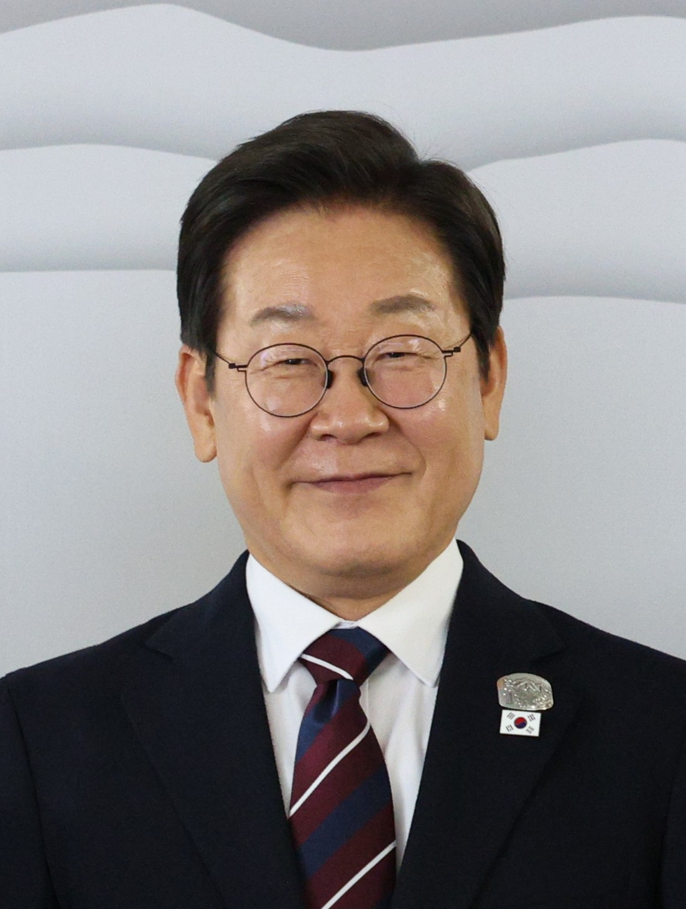

O‘zbekiston va Janubiy Koreya 13 hujjat imzoladi
Seuldagi sammitda Mirziyoyev va Li Che Myon sun’iy intellekt, kritik minerallar va mudofaa bo‘yicha hamkorlikni kengaytirishga kelishdi. Bu — Koreya–Markaziy Osiyo sammiti arafasida.

2026-yil 14-sentabr, Seul. O‘zbekiston Prezidenti Shavkat Mirziyoyev va Janubiy Koreya Prezidenti Li Che Myon o‘rtasidagi muzokaralar yakunida ikki davlat 13 ta idoralararo hujjat va memorandum almashdi.
Nima kelishildi
Tomonlar strategik hamkorlikni yangi sohalarga — sun’iy intellekt, kritik minerallar va mudofaa yo‘nalishlariga kengaytirishga kelishdi. Hujjatlar transport, aviatsiya, qishloq xo‘jaligi, turizm, ta’lim, tibbiyot, atrof-muhitni muhofaza qilish va intellektual mulk kabi sohalarni qamrab oladi.
Aniq loyihalar
- Imzolangan hujjatlar: 13 ta
- Yuqori tezlikli poyezdlar (rejada): +8 ta
- Istiqbolli loyihalar: ~12 mlrd dollar
- Genom-biobank markazi: “Biome Center”
Kelishuvlar doirasida O‘zbekistonga yana sakkizta Koreya ishlab chiqargan yuqori tezlikli poyezd yetkazib berish va genom hamda biobank markazi (“Biome Center”) tashkil etish ko‘zda tutilgan. Tomonlar taxminan 12 mlrd dollarlik istiqbolli investitsiya loyihalarini ishlab chiqish rejasini ham e’lon qildi.
Kritik minerallar, sun’iy intellekt va mudofaadan tortib — o‘zaro manfaatli hamkorlik ufqlarini kengaytirib, kelajak o‘sishini ta’minlaydigan yangi dvigatellarni birga yaratamiz.
— Li Che Myon, Janubiy Koreya prezidenti
Kontekst
Uchrashuv Seul mezbonlik qilayotgan birinchi Koreya–Markaziy Osiyo sammiti arafasida bo‘lib o‘tdi. Sammitga O‘zbekiston, Qozog‘iston, Turkmaniston, Tojikiston va Qirg‘iziston davlat rahbarlari taklif etilgan.